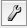
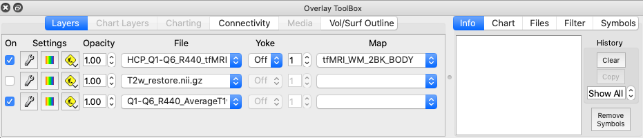

Layers
The Layers tab in the Overlay Toolbox
contains controls for display of data maps on surfaces or in volumes.
- By default, 3 layers are loaded into the
Layers tab. The top layer of displayed data is listed as the
first row, the second layer below that, etc., like a layer
cake.
- Checkboxes under On at the left
indicate whether the data listed for that layer is being
displayed. When a top layer is unchecked, the layers
underneath that layer are visible.
- Clicking the 
button opens the Overlay
and Map Settings box that contains several
tabs for setting display options for the different types of
Layers data: Labels, Layer (volume layer settings), Metadata,
Palette, Parcels, Trajectory.
- Clicking the
 button toggles on the colorbar for the displayed layer's
palette. The values at the top of the colorbar change with
each map to match the range of data displayed.
button toggles on the colorbar for the displayed layer's
palette. The values at the top of the colorbar change with
each map to match the range of data displayed.
- Clicking the
 button shows options for moving, adding and removing layers
relative to the layer in which this button was selected.
button shows options for moving, adding and removing layers
relative to the layer in which this button was selected.
- Opacity sets the opacity of the
layer. 1.0 is 100% opaque. If the opacity is set to a low
value, layers under the selected layer will show through.
- The File pulldown sets the file
to display on that layer. Only loaded files that can be
displayed in the type of view set for the Active
Tab will be options. Files can
contain one or more brain Maps that may be selected by
number or name in the pulldowns to the right.
- Yoke sets map yoking between
layers to a map yoking group denoted by a Roman numeral.
Navigation between maps of layers in the same map yoking group
will be yoked (move together). If files with differing numbers
of maps are set to the same map yoking group, a warning will
appear before yoking is activated.
